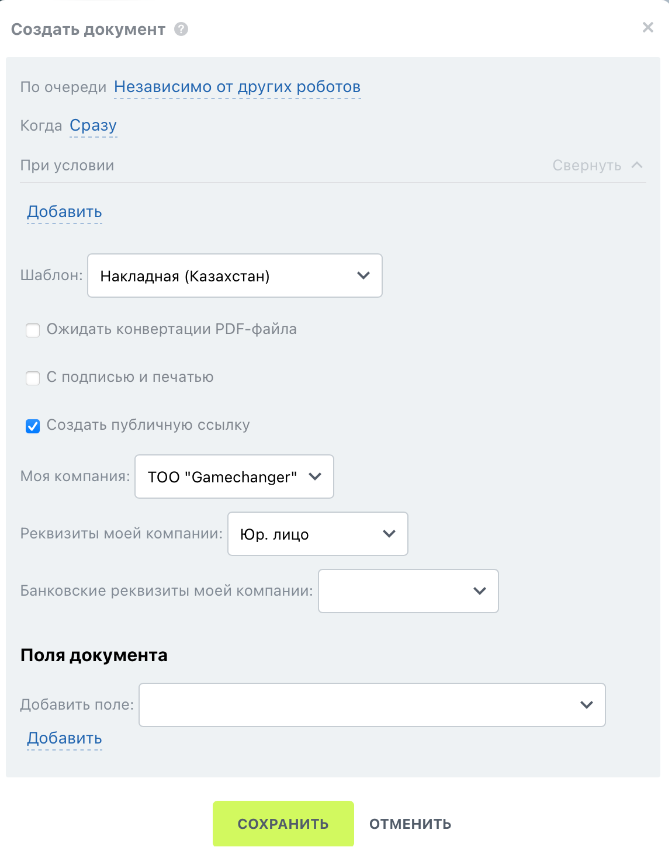

Воронка продаж для склада в Битрикс24
Воронка продаж для склада в Битрикс24 помогает управлять процессом продаж с учётом складских операций, таких как отгрузка товаров и создание накладных. Рассмотрим настройку на примере воронки для кондитерского цеха.
Поля в сделке зависят от потребностей предприятия. Для склада кондитерского цеха добавим следующие поля:
Раздел «О сделке»

- Название — системное поле.
- Сумма и валюта — системное поле.
- Клиент — системное поле.
- Товары — системное поле, привязка к каталогу.
- Дата доставки — пользовательское поле, тип «Дата».
- Адрес клиента (доставки) — пользовательское поле, тип «Строка».
Раздел «Оплата»

- Способ оплаты — пользовательское поле, тип «Список».
- Дата оплаты — пользовательское поле, тип «Дата».
- Чек об оплате — пользовательское поле, тип «Файл».
Как создать поля

Следуйте этим шагам для настройки полей:
- Откройте раздел CRM в Битрикс24.
- Нажмите зелёную кнопку «Создать».
- Удалите ненужные разделы: прокрутите вниз и нажмите «Удалить раздел».
- Создайте новый раздел: нажмите «Создать раздел».
- Добавьте поля: нажмите «Создать поле» и настройте перечисленные выше поля.
- Для системных полей нажмите «Выбрать поле», найдите нужное поле, отметьте галочкой и нажмите «Выбрать».
Поля настроены и готовы для работы со сделками.
Для склада создадим две воронки, так как в Битрикс24 нельзя настроить отгрузку товара на конкретной стадии внутри одной воронки.
Воронка 1: «Воронка продаж»
Этапы:
- Новая
- Предзаказ
- Собран
Воронка 2: «Оплата»
Этапы:
- Доставлено
- Просроченная оплата
- Оплачено
- Проконтролировано
Этапы настроены для управления продажами и оплатой.
Роботы автоматизируют процессы на каждом этапе воронки. Настроим их для обеих воронок.
Воронка «Воронка продаж»
Этап «Новая»
- Робот 1: Изменить элемент — Изменяет поле «Адрес клиента», копируя значение из поля «Адрес» сущности «Компания».
- Робот 2: Сменить стадию — Переводит сделку на стадию «Предзаказ» с условием: «Дата доставки» не равна текущей дате.
- Робот 3: Создать документ — Создаёт документ (например, накладную) на основе шаблона. Укажите нужные поля и выберите реквизиты вашей компании. 
- Робот 4: Поставить задачу — Создаёт задачу для кладовщика на сбор заказа. Прикрепите созданный документ (накладную): нажмите «…», выберите «Создать документ» в разделе «Роботы», выберите формат файла. Установите крайний срок, в «Дополнительно» включите «Приостановить процесс на время выполнения задачи».
- Робот 5: Сменить стадию — Переводит сделку на стадию «Собран».


Этап «Предзаказ»
- Робот 1: Создать документ — Создаёт документ (например, накладную) для этапа «Предзаказ».
- Робот 2: Поставить задачу — Создаёт задачу с временем срабатывания «Дата доставки».
- Робот 3: Сменить стадию — Переводит сделку на стадию «Собран» после выполнения задачи.
Этап «Собран»
- Робот 1: Поставить задачу — Создаёт задачу для курьера с описанием, включающим поле «Адрес доставки». В «Дополнительно» включите «Приостановить процесс на время выполнения задачи».
- Робот 2: Сменить стадию — Переводит сделку на стадию «Сделка успешна».


Этап «Сделка успешна»
- Робот 1: Сменить воронку — Переводит сделку в воронку «Оплата» на первую стадию («Доставлено»).

Воронка «Оплата» управляет процессом оплаты и контроля, включая обработку просроченных платежей.
Подготовка: Настройка поля в сущности «Компания»

Для автоматизации просрочек добавим поле в сущности «Компания»:
- Перейдите в раздел «Компании».
- Создайте поле «Срок оплаты» (тип «Список»).
- Добавьте значения: 3 дня, 7 дней, 14 дней (или другие сроки).
Этап «Доставлено»
Настройте роботов для контроля сроков оплаты:
- Робот: Сменить стадию — Переводит сделку на стадию «Просроченная оплата» через 4 дня после доставки, если «Срок оплаты» компании равен 3 дня. Повторите для сроков 7 и 14 дней.
Этап «Просроченная оплата»
- Робот: Уведомление — Отправляет уведомление ответственному менеджеру о просрочке оплаты.
Этап «Оплачено»
- Робот 1: Поставить задачу — Создаёт задачу для бухгалтера на контроль оплаты. В описание добавьте сумму сделки и название компании.
- Робот 2: Сменить стадию — Переводит сделку на стадию «Проконтролировано».
Этап «Проконтролировано»
Настройте права доступа в CRM, чтобы запретить изменение сделок на этом этапе.
Воронка «Оплата» автоматизирует контроль платежей и завершение сделок.